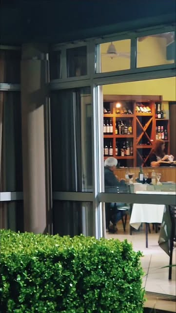
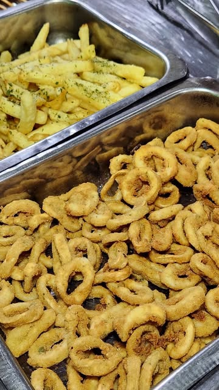

Empalme Villa Constitución
Comer rico.
Juntarse.
Volver.
Tenedor libre y una mesa para compartir. El próximo plan en familia empieza en Lion.

Una mirada a Lion · Foto del perfil público
Tenedor libreViernes · Sábado · DomingoRuta 21 · Km 38

Imagen de una propuesta del restaurante. Ver publicación
La propuesta de Lion
La mesa se disfruta
mejor cuando
se comparte.
Una salida con la familia, un encuentro con amigos o simplemente las ganas de comer rico. Conocé la propuesta de tenedor libre y consultá las opciones del día.
Los platos, precios y disponibilidad se confirman directamente con el restaurante.
Mirá qué se cocina en LionHacete un lugar
El fin de semana tiene plan.
Viernes21:00Desde la noche
Sábado21:00Desde la noche
Domingo12:00Desde el mediodía
Horarios publicados en el perfil. Consultá por feriados y fechas especiales.
Nos vemos en Lion
Cerca del camino.
Lejos del apuro.
Ruta 21, kilómetro 38.
Empalme Villa Constitución, Santa Fe.
¿Cuántos vienen?
Contanos el día y la cantidad de personas. El equipo te confirma la disponibilidad para tu mesa.